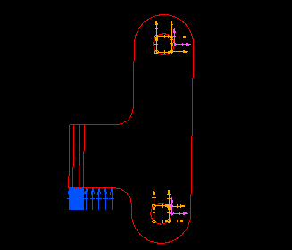

(Demonstrator 1)
| Next Step | Return to Table of Contents | Previous Step |
fes

Show the front view
Create restraints on the pivot hole surfaces
Filter, Surfaces, Select Only
Window Pick the four hole surfaces
Change the bottom three restraints from constant to free
OK


Create a pressure load on the bottom working flat faces of the stop
Window Select the seven surfaces
Amplitude = 10000



Type the global symbol mes
mes
| Next Step | Return to Table of Contents | Previous Step |